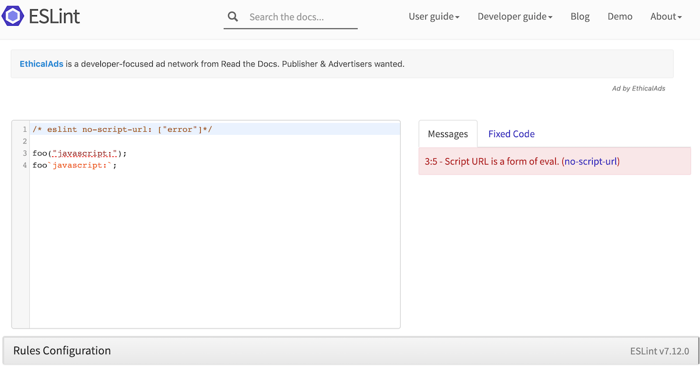
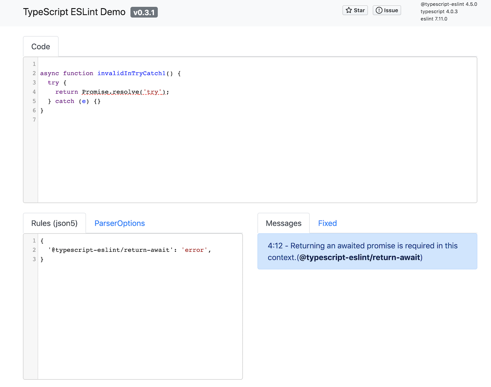

node 패키지 브라우저에서 사용하기 (with Webpack 4)
웹팩을 사용해서, fs, path와 같은 NodeJS Built-In 모듈을 사용하는 패키지를 브라우저에서 동작하도록 땜질식(?)으로 번들링해본 후기입니다.
간단한 결론만 원하신다면 Summary 를 참고하세요.
이유
근래에 TypeScript에 흥미를 느껴 typescript-eslint 프로젝트에 조금씩 컨트리뷰션을 하고 있습니다. 컨트리뷰션을 하기 위해 해결할 이슈를 재현해 보곤 하는데, 매번 이슈를 재현하기 위해 프로젝트의 테스트 코드를 찾아서 수정하는 것이 귀찮게 느껴졌습니다.
ESLint에서는 이를 위해 Online Demo를 제공하고 있는데 이슈를 재현하고 공유할 때 유용하게 사용됩니다. 
이에 typescript-eslint 를 지원하는 웹 데모를 만들어 보면 좋겠다고 생각하였고 이를 만들며 겪었던 문제점과 해결 방법을 정리해 보았습니다.
문제점
typescript-eslint를 브라우저에서 동작시키기 위해서는 typescript-eslint 프로젝트뿐만 아니라 eslint 도 브라우저에서 동작시켜야 합니다. 하지만 해당 프로젝트들은 NodeJS 에서 동작하는 패키지이고 브라우저에서 동작을 지원하지 않습니다.
NodeJS 의 fs, path 와 같은 built-in 모듈을 사용하는 패키지를 웹팩을 이용해 번들해야 했는데 번들시 해당 모듈을 찾지 못해 아래와 같은 에러가 발생하게 됩니다.
ERROR in ./node_modules/@eslint/eslintrc/lib/config-array-factory.js
Module not found: Error: Can't resolve 'fs' in '...project/node_modules/@eslint/eslintrc/lib'결국 번들링을 해서 사용하기 위해서는 NodeJS built-in 모듈을 사용하는 모듈을 별도로 처리해 주어야 했습니다.
처리해야 할 모듈은 런타임에 따라 아래 두 가지 경우로 나눌 수 있었습니다.
NodeJS Built-In 모듈을 사용하지만, 런타임에는 필요 없는 모듈
NodeJS Built-In 모듈을 사용하고, 런타임에도 필요한 모듈
해결 1. 런타임에 필요 없는 모듈
번들 결과에서 실제로 런타임에는 필요가 없는 모듈이 있는데, 예를 들어 ESLint에서 CLI 동작을 담당하는 모듈이 있습니다. 이 모듈은 브라우저 데모 동작시에는 실제로 동작할 필요가 없습니다.
이 경우 웹팩 - null-loader 를 사용하면 해당 모듈을 빈 모듈로 변경할 수 있습니다.
먼저 null-loader 를 설치합니다.
$ npm install null-loader --save-dev이후, 웹팩 설정의 rules 에 아래와 같이 null-loader를 추가해 줍니다. test에는 비어있는 모듈로 교체할 모듈을 명시해 줍니다.
module.exports = { rules: [ //... { test: [ /\/eslint\/.*\/cli-engine/, // ... ], use: "null-loader" } ] }
번들시 null-loader 에 test 에 설정한 모듈은 비어있는 모듈이 됩니다. 아무런 기능이 없는 모듈이 번들되게 되지만 실제로 런타임에는 사용되지 않기 때문에 동작에 아무런 문제가 되지 않습니다.
해결 2: 런타임에도 필요한 모듈
null-loader 를 사용해 대부분의 번들링 에러를 회피할 수 있었습니다 하지만 런타임에 실제로 사용되는 모듈에 null-loader 를 사용하면 실제 코드 동작시에 에러가 발생하게 됩니다.
typescript-eslint 에서는 설정에 따라 tsconfig.json 파일의 경로를 반환하는 용도로 globby를 사용하고 있었고, globby 는 내부에서 fs 를 사용하고 있습니다. 때문에 typescript-eslint 를 번들시 globby 에서 fs를 찾지 못한다는 에러가 발생하게 됩니다.
import { sync as globSync } from 'globby'; //... function prepareAndTransformProjects() { //... globSync([...globbedProjects, ...ignoreListInput], { cwd: extra.tsconfigRootDir, }); }
이 경우 NormalModuleReplacementPlugin를 사용할 수 있습니다. NormalModuleReplacementPlugin 은 웹팩 번들시에 특정 모듈을 내가 정의한 커스텀 모듈로 교체해 사용할 수 있습니다
먼저 해당 모듈을 대체해서 동작할 모듈을 간단하게 작성합니다.(Node Built-In 을 사용하는 패키지를 목킹한다고 생각하면 됩니다)
// src/modules/globby.js module.exports = { sync() { return ["./tsconfig.json"]; }, };
이후 웹팩 설정에서 plugins 에 NormalModuleReplacementPlugin로 해당 모듈을 대체할 커스텀 모듈로 대체합니다.
const webpack = require('webpack'); module.exports = { //... plugins: [ new webpack.NormalModuleReplacementPlugin( /globby/, // 교체 대상 모듈 "src/modules/globby.js" // 대신 사용할 모듈 ), ] }
이제 웹팩으로 번들시 typescript-eslint 내부에서 import 해서 사용하는 globby 는 제 프로젝트에 있는 src/modules/globby.js 로 대체되게 됩니다.
결론
결론적으로 위와 같은 과정(삽질?) 을 통해 typescript-eslint-demo를 완성하게 되었습니다.

사이드 프로젝트였고 어찌 되었든 동작하는 것이 가장 큰 목표였기 때문에 위와 같은 삽질을 하게 되었는데요.
정리해 놓고 보니 간단하지만 실제 과정은 녹록친 않았습니다. eslint, tyescript-eslint 내부에 어떤 모듈에서 Node Built-In 모듈을 사용하는지 파악하는게 어려웠기 때문에 매번 번들링을 시도하면서 에러가 발생하면 실제 코드를 찾아보고 null-loader 나 NormalModuleReplacementPlugin 으로 땜질(?)하듯이 작업해야 했습니다.
작업 결과뿐 아니라 유지 보수 관점에서도 단점이 있는데요. 번들할 패키지가 의존하는 모듈에 의존적인 웹팩설정이기 때문에, 패키지 업데이트에 많이 취약하다는 단점이 있습니다.
typescript-eslint 에서 구조 리팩터링이 있다면 ... 웹팩을 다시 설정해야겠죠..?
때문에 실제 업무였다면 좀더 좋은 방법을 찾아보았을 것 같습니다.
어찌 되었든 완성된 Online Demo 를 ESLint 메인테이너분도 사용해 주시기도 하고, 저도 이슈를 재현하고 사용자와 공유하는데 사용중이라 만든 보람은 느껴지는 프로젝트였습니다.
Summary
fs, path 와 같은 NodeJS 모듈을 사용하는 패키지를 웹팩으로 번들하는 경우, 런타임에 필요없는 모듈은 null-loader, 런타임에도 필요한 모듈은 NormalModuleReplacementPlugin 를 활용해 보세요.